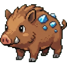

Tap a stage to read its story.
Tuskol's piglet form is a warm-brown wild boar with two stubby forward-pointing tusks already gleaming faintly with a metallic sheen. Its body is compact and its eyes small but bright. A scatter of diamond-blue crystal fragments dot its back where its future armour plates are budding. It trots through the Steel Fortress's lower courtyards with the absolute confidence of a creature that has never been told no - knocking over supply crates and eating whatever rolls out.
Field note: The crystal specks on a Hoglet's back make a faint ringing sound in cold weather - fortress guards call it 'the bell pig.'
Steel Fortress. Hoglet and its family are found in the Steel Fortress. See everyone who lives there.
Share a Bond Food that matches its types to become friends. Hoglet loves:
A Bond Food is not a trick. It joins your spirit with the Kimuro's spirit, and only when it chooses you.
Print the Kimuro adventure packs: mazes, cards, a board game and Bond Mark medals.
See the printable packs